16. [Cours]：使用 Spring Security 保护 Web 服务访问
关键词：多层架构、Spring、依赖注入、Web服务 / 安全化的jSON、客户端/服务器
16.1. Support
 |  |
本章的项目位于文件夹 [support / chap-16] 中。脚本 SQL 用于生成测试所需的数据库。
16.2. Spring Security在Web应用中的定位
让我们来探讨 Spring Security 在 Web 应用程序开发中的定位。通常，Web 应用程序会基于如下所示的多层架构构建：
 |
- [Spring Security]层仅允许授权用户访问[web]层。
16.3. Spring Security 入门教程
我们将再次导入一份 Spring 指南，具体步骤如下：
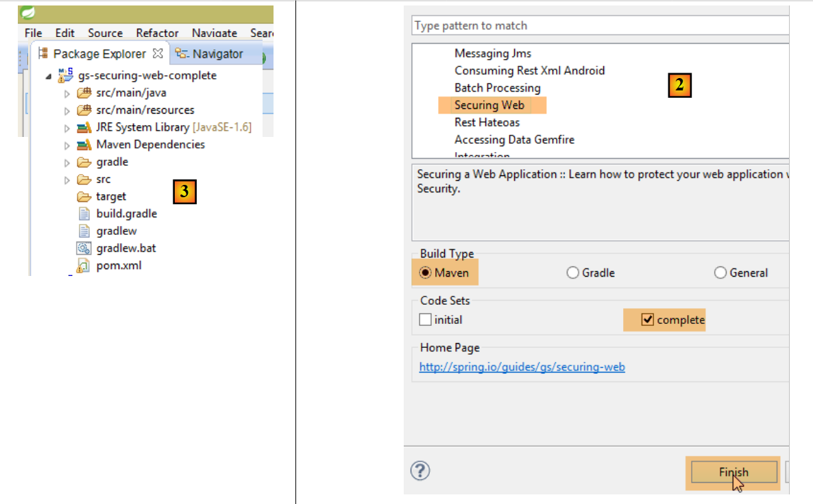 |
 |
该项目由以下部分组成：
- 在 [templates] 文件夹中，包含项目的 HTML 页面；
- [Application]：是该项目的可执行类；
- [MvcConfig]：是 Spring 配置类 MVC；
- [WebSecurityConfig]：是 Spring Security 的配置类；
16.3.1. Maven 配置
项目 [3] 是一个 Maven 项目。让我们查看其 [pom.xml] 文件以了解其依赖关系：
<?xml version="1.0" encoding="UTF-8"?>
<project xmlns="http://maven.apache.org/POM/4.0.0" xmlns:xsi="http://www.w3.org/2001/XMLSchema-instance"
xsi:schemaLocation="http://maven.apache.org/POM/4.0.0 http://maven.apache.org/xsd/maven-4.0.0.xsd">
<modelVersion>4.0.0</modelVersion>
<groupId>org.springframework</groupId>
<artifactId>gs-securing-web</artifactId>
<version>0.1.0</version>
<parent>
<groupId>org.springframework.boot</groupId>
<artifactId>spring-boot-starter-parent</artifactId>
<version>1.2.3.RELEASE</version>
</parent>
<dependencies>
<dependency>
<groupId>org.springframework.boot</groupId>
<artifactId>spring-boot-starter-thymeleaf</artifactId>
</dependency>
<!-- tag::security[] -->
<dependency>
<groupId>org.springframework.boot</groupId>
<artifactId>spring-boot-starter-security</artifactId>
</dependency>
<!-- end::security[] -->
</dependencies>
<properties>
<start-class>hello.Application</start-class>
</properties>
<build>
<plugins>
<plugin>
<groupId>org.springframework.boot</groupId>
<artifactId>spring-boot-maven-plugin</artifactId>
</plugin>
</plugins>
</build>
</project>
- 第 10-14 行：该项目是一个 Spring Boot 项目；
- 第 17-20 行：依赖于 [Thymeleaf] 框架；
- 第 22-25 行：依赖于 Spring Security 框架；
16.3.2. Thymeleaf视图
 |
[home.html]视图如下：
 |
<!DOCTYPE html>
<html xmlns="http://www.w3.org/1999/xhtml"
xmlns:th="http://www.thymeleaf.org"
xmlns:sec="http://www.thymeleaf.org/thymeleaf-extras-springsecurity3">
<head>
<title>Spring Security Example</title>
</head>
<body>
<h1>Welcome!</h1>
<p>
Click <a th:href="@{/hello}">here</a> to see a greeting.
</p>
</body>
</html>
- 第 12 行：[th:href="@{/hello}"] 属性将生成 [<a>] 标签的 [href] 属性。 值 [@{/hello}] 将生成路径 [<context>/hello]，其中 [context] 是 Web 应用程序的上下文；
生成的代码 HTML 如下：
<!DOCTYPE html>
<html xmlns="http://www.w3.org/1999/xhtml" xmlns:sec="http://www.thymeleaf.org/thymeleaf-extras-springsecurity3">
<head>
<title>Spring Security Example</title>
</head>
<body>
<h1>Welcome!</h1>
<p>
Click
<a href="/hello">here</a>
to see a greeting.
</p>
</body>
</html>
视图 [hello.html] 如下所示：
 |
<!DOCTYPE html>
<html xmlns="http://www.w3.org/1999/xhtml"
xmlns:th="http://www.thymeleaf.org"
xmlns:sec="http://www.thymeleaf.org/thymeleaf-extras-springsecurity3">
<head>
<title>Hello World!</title>
</head>
<body>
<h1 th:inline="text">Hello [[${#httpServletRequest.remoteUser}]]!</h1>
<form th:action="@{/logout}" method="post">
<input type="submit" value="Sign Out" />
</form>
</body>
</html>
- 第 9 行：属性 [th:inline="text"] 将生成标签 [<h1>] 的文本。该文本包含一个需要求值的 $ 表达式。 元素 [[${#httpServletRequest.remoteUser}]] 是当前查询 HTTP 中 [RemoteUser] 属性的值。这是已登录用户的名称；
- 第 10 行：一个 HTML 表单。[th:action="@{/logout}"] 属性将生成 [form] 标签的 [action] 属性。 值 [@{/logout}] 将生成路径 [<context>/logout]，其中 [context] 是 Web 应用程序的上下文；
生成的代码 HTML 如下：
<!DOCTYPE html>
<html xmlns="http://www.w3.org/1999/xhtml" xmlns:sec="http://www.thymeleaf.org/thymeleaf-extras-springsecurity3">
<head>
<title>Hello World!</title>
</head>
<body>
<h1>Hello user!</h1>
<form method="post" action="/logout">
<input type="submit" value="Sign Out" />
<input type="hidden" name="_csrf" value="b152e5b9-d1a4-4492-b89d-b733fe521c91" />
</form>
</body>
</html>
- 第 8 行：Hello [[${#httpServletRequest.remoteUser}]]! 的翻译；
- 第 9 行：@{/logout} 的翻译；
- 第 11 行：一个名为 _csrf 的隐藏字段（属性 name）；
视图 [login.html] 如下：
 |
<!DOCTYPE html>
<html xmlns="http://www.w3.org/1999/xhtml"
xmlns:th="http://www.thymeleaf.org"
xmlns:sec="http://www.thymeleaf.org/thymeleaf-extras-springsecurity3">
<head>
<title>Spring Security Example</title>
</head>
<body>
<div th:if="${param.error}">Invalid username and password.</div>
<div th:if="${param.logout}">You have been logged out.</div>
<form th:action="@{/login}" method="post">
<div>
<label> User Name : <input type="text" name="username" />
</label>
</div>
<div>
<label> Password: <input type="password" name="password" />
</label>
</div>
<div>
<input type="submit" value="Sign In" />
</div>
</form>
</body>
</html>
- 第 9 行：属性 [th:if="${param.error}"] 确保只有当显示登录页面的 URL 包含参数 [error]（http://context/login?error）时，才会生成 <div> 标签；
- 第 10 行：属性 [th:if="${param.logout}"] 确保只有当显示登录页面的 URL 包含参数 [logout]（http://context/login?logout）时，才会生成 <div> 标签；
- 第 11-23 行：一个 HTML 表单；
- 第 11 行：表单将提交至 URL [<context>/login]，其中 <context> 是 Web 应用程序的上下文；
- 第 13 行：一个名为 [username] 的输入字段；
- 第 17 行：一个名为 [password] 的输入字段；
生成的代码 HTML 如下：
<!DOCTYPE html>
<html xmlns="http://www.w3.org/1999/xhtml" xmlns:sec="http://www.thymeleaf.org/thymeleaf-extras-springsecurity3">
<head>
<title>Spring Security Example </title>
</head>
<body>
<div>
You have been logged out.
</div>
<form method="post" action="/login">
<div>
<label>
User Name :
<input type="text" name="username" />
</label>
</div>
<div>
<label>
Password:
<input type="password" name="password" />
</label>
</div>
<div>
<input type="submit" value="Sign In" />
</div>
<input type="hidden" name="_csrf" value="ef809b0a-88b4-4db9-bc53-342216b77632" />
</form>
</body>
</html>
请注意第28行，Thymeleaf添加了一个名为[_csrf]的隐藏字段。
16.3.3. Spring 配置 MVC
 |
类 [MvcConfig] 配置了 Spring 框架 MVC：
package hello;
import org.springframework.context.annotation.Configuration;
import org.springframework.web.servlet.config.annotation.ViewControllerRegistry;
import org.springframework.web.servlet.config.annotation.WebMvcConfigurerAdapter;
@Configuration
public class MvcConfig extends WebMvcConfigurerAdapter {
@Override
public void addViewControllers(ViewControllerRegistry registry) {
registry.addViewController("/home").setViewName("home");
registry.addViewController("/").setViewName("home");
registry.addViewController("/hello").setViewName("hello");
registry.addViewController("/login").setViewName("login");
}
}
- 第 7 行：注解 [@Configuration] 将类 [MvcConfig] 设为配置类；
- 第 8 行：类 [MvcConfig] 继承自类 [WebMvcConfigurerAdapter]，以重写其中某些方法；
- 第 10 行：重定义父类的某个方法；
- 第 11-16 行：方法 [addViewControllers] 用于将 URL 与视图 HTML 关联。其中建立了以下关联：
视图 | |
/templates/home.html | |
/templates/hello.html | |
/templates/login.html |
后缀 [html] 和文件夹 [templates] 是 Thymeleaf 使用的默认值。它们可以通过配置进行更改。文件夹 [templates] 必须位于项目类路径的根目录下：
 |
在 [1] 之上，文件夹 [java] 和 [resources] 均为源文件夹（source folders）。这意味着它们的内容将位于项目类路径的根目录下。 因此，在 [2] 中，文件夹 [hello] 和 [templates] 将位于类路径的根目录下。
16.3.4. Spring Security 配置
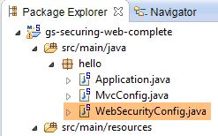 |
类 [WebSecurityConfig] 配置 Spring Security 框架：
package hello;
import org.springframework.context.annotation.Configuration;
import org.springframework.security.config.annotation.authentication.builders.AuthenticationManagerBuilder;
import org.springframework.security.config.annotation.web.builders.HttpSecurity;
import org.springframework.security.config.annotation.web.configuration.WebSecurityConfigurerAdapter;
import org.springframework.security.config.annotation.web.servlet.configuration.EnableWebMvcSecurity;
@Configuration
@EnableWebMvcSecurity
public class WebSecurityConfig extends WebSecurityConfigurerAdapter {
@Override
protected void configure(HttpSecurity http) throws Exception {
http.authorizeRequests().antMatchers("/", "/home").permitAll().anyRequest().authenticated();
http.formLogin().loginPage("/login").permitAll().and().logout().permitAll();
}
@Override
protected void configure(AuthenticationManagerBuilder auth) throws Exception {
auth.inMemoryAuthentication().withUser("user").password("password").roles("USER");
}
}
- 第 9 行：注解 [@Configuration] 将类 [WebSecurityConfig] 设为配置类；
- 第 10 行：注解 [@EnableWebSecurity] 将类 [WebSecurityConfig] 设为 Spring Security 配置类；
- 第 11 行：类 [WebSecurity] 继承自类 [WebSecurityConfigurerAdapter]，以重写其中某些方法；
- 第 12 行：重写父类的某个方法；
- 第 13-16 行：重写方法 [configure(HttpSecurity http)]，用于定义应用程序中各个 URL 的访问权限；
- 第 14 行：方法 [http.authorizeRequests()] 用于将 URL 与访问权限关联。其中进行了以下关联：
规则 | 代码 | |
无需身份验证的访问 | | |
仅限经过身份验证的访问 |
- 第 15 行：定义身份验证方法。身份验证通过表单 URL [/login] 进行，该表单对所有人开放 [http.formLogin().loginPage("/login").permitAll()]。注销（logout）功能同样对所有人开放；
- 第19-21行：重新定义了管理用户的[configure(AuthenticationManagerBuilder auth)]方法；
- 第20行：身份验证使用硬编码的用户进行 [auth.inMemoryAuthentication()]。 此处定义的用户登录名 [user]，密码 [password]，角色 [USER]。可为具有相同角色的用户授予相同的权限；
16.3.5. 可执行类
 |
类 [Application] 如下所示：
package hello;
import org.springframework.boot.autoconfigure.EnableAutoConfiguration;
import org.springframework.boot.SpringApplication;
import org.springframework.context.annotation.ComponentScan;
import org.springframework.context.annotation.Configuration;
@EnableAutoConfiguration
@Configuration
@ComponentScan
public class Application {
public static void main(String[] args) throws Throwable {
SpringApplication.run(Application.class, args);
}
}
- 第 8 行：注解 [@EnableAutoConfiguration] 要求 Spring Boot（第 3 行）进行开发者未显式配置的配置；
- 第 9 行：将类 [Application] 设为 Spring 配置类；
- 第 10 行：要求扫描 [Application] 类的文件夹，以查找 Spring 组件。 [MvcConfig] 和 [WebSecurityConfig] 这两个类将被发现，因为它们带有 [@Configuration] 注解；
- 第 13 行：可执行类的 [main] 方法；
- 第 14 行：静态方法 [SpringApplication.run] 被调用，其参数为配置类 [Application]。 我们之前已经遇到过这个流程，并且知道项目 Maven 依赖中嵌入的 Tomcat 服务器将被启动，项目也将部署到该服务器上。我们看到四个 URL 由 [/, /home, /login, /hello] 管理，其中部分受访问权限保护。
16.3.6. 应用程序测试
首先，我们请求 URL（即 [/]），这是四个被接受的 URL 之一。它关联的视图是 [/templates/home.html]：
 |
所请求的 URL（即 [/]）对所有人开放。这就是我们获取它的原因。[here] 的链接如下：
点击该链接后，系统将请求 URL [/hello]。该文件受保护：
规则 | 代码 | |
无需身份验证即可访问 | | |
仅限经过身份验证的用户访问 |
必须通过身份验证才能获取该页面。Spring Security 将把客户端浏览器重定向至身份验证页面。根据所见配置，该页面为 URL [/login]。该页面对所有人开放：
http.formLogin().loginPage("/login").permitAll().and().logout().permitAll();
因此我们得到 [1]：
 |
所得页面的源代码如下：
- 第7行出现了一个隐藏字段，该字段在原始页面[login.html]中并不存在。这是Thymeleaf添加的。该代码名为CSRF（跨站请求伪造），旨在消除一个安全漏洞。 该令牌必须随身份验证信息一并发送给 Spring Security，才能被后者接受；
我们记得，Spring Security 仅识别用户 user/password。如果我们在 [2] 中输入其他内容，我们会得到同一页面，并在 [3] 中看到一条错误信息。 Spring Security 将浏览器重定向到了 URL [http://localhost:8080/login?error]。参数 [error] 的存在触发了以下标签的显示：
<div th:if="${param.error}">Invalid username and password.</div>
现在，输入预期的用户名/密码值 [4]：
 |
- 在 [4] 中，我们进行身份验证；
- 在 [5] 处，Spring Security 将我们重定向至 URL [/hello]，因为这是我们在被重定向至登录页面时所请求的 URL。 用户身份由 [hello.html] 中的以下行显示：
页面 [5] 显示了以下表单：
<form th:action="@{/logout}" method="post">
<input type="submit" value="Sign Out" />
</form>
点击按钮 [Sign Out] 后，将生成 POST 并应用于 URL 和 [/logout]。 该文件与URL、[/login]一样，对所有人开放：
http.formLogin().loginPage("/login").permitAll().and().logout().permitAll();
在我们的关联 URL / 视图中，我们未对 URL [/logout] 进行任何定义。会发生什么情况？让我们试一试：
 |
- 在 [6] 中，我们点击 [Sign Out] 按钮；
- 在 [7] 处，我们看到已被重定向至 URL [http://localhost:8080/login?logout]。这是 Spring Security 发起的重定向。 由于 URL 中存在参数 [logout]，视图中显示了以下内容：
<div th:if="${param.logout}">You have been logged out.</div>
16.3.7. 结论
在前面的示例中，我们本可以先编写 Web 应用程序，然后再对其进行安全加固。Spring Security 并不具有侵入性。我们可以为已经编写好的 Web 应用程序配置安全机制。此外，我们还发现了以下几点：
- 可以定义一个身份验证页面；
- 身份验证必须附带由 Spring Security 签发的令牌 CSRF；
- 若认证失败，系统将重定向至认证页面，且 URL 参数中会包含 error 字段；
- 若认证成功，将重定向至认证发生时请求的页面。 如果直接请求身份验证页面而不经过中间页面，则 Spring Security 会将我们重定向到 URL [/]（此情况未被提及）；
- 通过使用 POST 请求 URL [/logout] 即可注销。 Spring Security 随后会将我们重定向至包含 logout 参数的 URL 认证页面；
所有这些结论均基于 Spring Security 的默认行为。通过重写 [WebSecurityConfigurerAdapter] 类的某些方法，可以配置更改这些行为。
之前的教程在后续内容中帮助不大。实际上，我们将使用：
- 一个数据库来存储用户、密码及其角色；
- 基于 HTTP 头部的身份验证；
关于我们此处要实现的功能，现有的教程相当有限。即将提出的解决方案是整合了从各处收集的代码。
16.4. 在产品 Web/JSON 服务上部署安全措施
16.4.1. 数据库
[dbintrospringdata] 数据库进行了扩展，以支持用户、密码和角色的管理。新增了三个表：

表 [USERS]：用户
- ID：主键；
- VERSION：行版本控制列；
- IDENTITY：用户的描述性标识；
- LOGIN：用户的登录名；
- PASSWORD：其密码；
在表 USERS 中，密码并非以明文形式存储：
 |
用于加密密码的算法是 BCRYPT。
表 [ROLES]：角色
- ID：主键；
- VERSION：行版本控制列；
- NAME：角色名称。默认情况下，Spring Security 期望角色名称采用 ROLE_XX 的格式，例如 ROLE_ADMIN 或 ROLE_GUEST；
 |
表 [USERS_ROLES]：USERS / ROLES 的连接表
一个用户可以拥有多个角色，一个角色可以包含多个用户。这种多对多关系通过表[USERS_ROLES]体现。
- ID：主键；
- VERSION：行版本控制列；
- USER_ID：用户标识；
- ROLE_ID：角色标识符；
 |
16.4.2. Eclipse 项目
我们创建以下 Eclipse 项目：
1  |
- 在 [1] 中：新项目包含以下包：
- [spring.security.entities]：包含与数据库中三个新表对应的实体JPA；
- [spring.security.repositories]：包含与三个新表关联的 Spring Data [repositories]；
- [spring.security.dao]：包含一个基于 [repositories] 的服务；
- [spring.security.config]：包含项目配置，特别是 Web 服务的安全访问配置；
- [spring.security.boot]：包含安全 Web 服务的启动类；
16.4.3. Maven 配置
新项目是一个由以下 [pom.xml] 文件配置的 Maven 项目：
<project xmlns="http://maven.apache.org/POM/4.0.0" xmlns:xsi="http://www.w3.org/2001/XMLSchema-instance"
xsi:schemaLocation="http://maven.apache.org/POM/4.0.0 http://maven.apache.org/xsd/maven-4.0.0.xsd">
<modelVersion>4.0.0</modelVersion>
<groupId>istia.st.spring.security</groupId>
<artifactId>intro-spring-security-server-01</artifactId>
<version>0.0.1-SNAPSHOT</version>
<name>intro-spring-security-server-01</name>
<description>démo spring security</description>
<properties>
<project.build.sourceEncoding>UTF-8</project.build.sourceEncoding>
<java.version>1.8</java.version>
</properties>
<parent>
<groupId>org.springframework.boot</groupId>
<artifactId>spring-boot-starter-parent</artifactId>
<version>1.2.7.RELEASE</version>
</parent>
<dependencies>
<dependency>
<groupId>istia.st.webjson</groupId>
<artifactId>intro-server-webjson-01</artifactId>
<version>0.0.1-SNAPSHOT</version>
</dependency>
<!-- Spring Security -->
<dependency>
<groupId>org.springframework.boot</groupId>
<artifactId>spring-boot-starter-security</artifactId>
</dependency>
<!-- Spring日志 -->
<dependency>
<groupId>org.springframework.boot</groupId>
<artifactId>spring-boot-starter-logging</artifactId>
</dependency>
<!-- Spring Boot -->
<dependency>
<groupId>org.springframework.boot</groupId>
<artifactId>spring-boot</artifactId>
</dependency>
<!-- Spring Boot 测试 -->
<dependency>
<groupId>org.springframework.boot</groupId>
<artifactId>spring-boot-starter-test</artifactId>
<scope>test</scope>
</dependency>
</dependencies>
<!-- 插件 -->
<build>
<plugins>
<plugin>
<artifactId>maven-assembly-plugin</artifactId>
<configuration>
<descriptorRefs>
<descriptorRef>jar-with-dependencies</descriptorRef>
</descriptorRefs>
</configuration>
</plugin>
<plugin>
<groupId>org.apache.maven.plugins</groupId>
<artifactId>maven-surefire-plugin</artifactId>
<version>2.18.1</version>
</plugin>
</plugins>
</build>
</project>
- 第 23-27 行：沿用现有配置，包含已研究的 Web 服务 / json 归档；
- 第 29-32 行：引入 Spring Security 类所需的依赖项；
- 第 34-37 行：日志库；
- 第39-42行：支持使用Spring Boot注解的库；
- 第44-48行：测试所需的库；
16.4.4. 新实体 [JPA]
 |
JPA 层定义了三个新实体：
 |
类 [User] 是表 [USERS] 的映射：
package spring.security.entities;
import javax.persistence.Column;
import javax.persistence.Entity;
import javax.persistence.Table;
import spring.data.entities.AbstractEntity;
@Entity
@Table(name = "USERS")
public class User extends AbstractEntity {
// 属性
@Column(name = "NAME")
private String name;
@Column(name = "LOGIN")
private String login;
@Column(name = "PASSWORD")
private String password;
// 构造函数
public User() {
}
public User(String name, String login, String password) {
this.name = name;
this.login = login;
this.password = password;
}
// getter 和 setter
...
}
- 第 11 行：该类继承了已用于其他实体的 [AbstractEntity] 类；
类 [Role] 是表 [ROLES] 的映射：
package spring.security.entities;
import javax.persistence.Column;
import javax.persistence.Entity;
import javax.persistence.Table;
import spring.data.entities.AbstractEntity;
@Entity
@Table(name = "ROLES")
public class Role extends AbstractEntity {
// 属性
@Column(name="NAME")
private String name;
// 构造函数
public Role() {
}
public Role(String name) {
this.name = name;
}
// 获取器和设置器
public String getName() {
return name;
}
public void setName(String name) {
this.name = name;
}
}
类 [UserRole] 是表 [USERS_ROLES] 的映射：
package spring.security.entities;
import javax.persistence.Column;
import javax.persistence.Entity;
import javax.persistence.JoinColumn;
import javax.persistence.ManyToOne;
import javax.persistence.Table;
import spring.data.entities.AbstractEntity;
@Entity
@Table(name = "USERS_ROLES")
public class UserRole extends AbstractEntity {
// 外键
@Column(name = "USER_ID", insertable = false, updatable = false)
private Long userId;
@Column(name = "ROLE_ID", insertable = false, updatable = false)
private Long roleId;
// 一个 UserRole 引用一个 User
@ManyToOne
@JoinColumn(name = "USER_ID")
private User user;
// 一个 UserRole 引用一个 Role
@ManyToOne
@JoinColumn(name = "ROLE_ID")
private Role role;
// 构造函数
public UserRole() {
}
public UserRole(User user, Role role) {
this.user = user;
this.role = role;
}
// 获取器和设置器
...
}
- 第 22-24 行：定义了表 [USERS_ROLES] 到表 [USERS] 的外键；
- 第 27-29 行：定义了表 [USERS_ROLES] 到表 [ROLES] 的外键；
16.4.5. [repositories]
 |
上述每个 JPA 实体均由一个 [repository] Spring Data 实体管理：
 |
接口 [UserRepository] 管理对实体 [User] 的访问：
package spring.security.repositories;
import org.springframework.data.jpa.repository.Query;
import org.springframework.data.repository.CrudRepository;
import spring.security.entities.Role;
import spring.security.entities.User;
public interface UserRepository extends CrudRepository<User, Long> {
// 通过 ID 标识的用户角色列表
@Query("select ur.role from UserRole ur where ur.user.id=?1")
Iterable<Role> getRoles(long id);
// 按唯一登录名查询用户的角色列表
@Query("select ur.role from UserRole ur where ur.user.login=?1 and ur.user.password=?2")
Iterable<Role> getRoles(String login, String password);
// 通过登录名搜索用户
User findUserByLogin(String login);
}
- 第 9 行：接口 [UserRepository] 继承了 Spring Data 的 [CrudRepository] 接口（第 4 行）；
- 第 12-13 行：方法 [getRoles(User user)] 可获取通过 [id] 标识的用户的全部角色
- 第 16-17 行：同上，但针对通过登录名/密码识别的用户；
- 第20行：通过用户名查找用户；
接口 [RoleRepository] 管理对实体 [Role] 的访问：
package spring.security.repositories;
import org.springframework.data.repository.CrudRepository;
import spring.security.entities.Role;
public interface RoleRepository extends CrudRepository<Role, Long> {
// 通过名称搜索角色
Role findRoleByName(String name);
}
- 第7行：接口 [RoleRepository] 扩展了接口 [CrudRepository]；
- 第 10 行：可通过角色名称进行搜索；
接口 [UserRoleRepository] 管理对实体 [UserRole] 的访问：
package spring.security.repositories;
import org.springframework.data.repository.CrudRepository;
import spring.security.entities.UserRole;
public interface UserRoleRepository extends CrudRepository<UserRole, Long> {
}
- 第 5 行：接口 [UserRoleRepository] 仅扩展了接口 [CrudRepository]，未为其添加新方法；
16.4.6. 用户和角色管理类
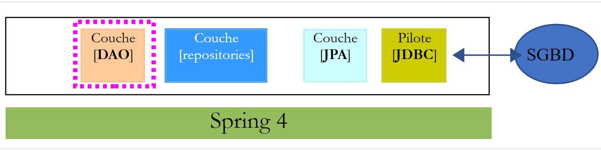 |
 |
Spring Security 要求创建一个实现以下 [UsersDetail] 接口的类：
 |
此接口在此由类 [AppUserDetails] 实现：
package spring.security.dao;
import java.util.ArrayList;
import java.util.Collection;
import org.springframework.security.core.GrantedAuthority;
import org.springframework.security.core.authority.SimpleGrantedAuthority;
import org.springframework.security.core.userdetails.UserDetails;
import spring.security.entities.Role;
import spring.security.entities.User;
import spring.security.repositories.UserRepository;
public class AppUserDetails implements UserDetails {
private static final long serialVersionUID = 1L;
// 属性
private User user;
private UserRepository userRepository;
// 构造函数
public AppUserDetails() {
}
public AppUserDetails(User user, UserRepository userRepository) {
this.user = user;
this.userRepository = userRepository;
}
// -------------------------接口
@Override
public Collection<? extends GrantedAuthority> getAuthorities() {
Collection<GrantedAuthority> authorities = new ArrayList<>();
for (Role role : userRepository.getRoles(user.getId())) {
authorities.add(new SimpleGrantedAuthority(role.getName()));
}
return authorities;
}
@Override
public String getPassword() {
return user.getPassword();
}
@Override
public String getUsername() {
return user.getLogin();
}
@Override
public boolean isAccountNonExpired() {
return true;
}
@Override
public boolean isAccountNonLocked() {
return true;
}
@Override
public boolean isCredentialsNonExpired() {
return true;
}
@Override
public boolean isEnabled() {
return true;
}
// 获取器和设置器
...
}
- 第 14 行：类 [AppUserDetails] 实现了接口 [UserDetails]；
- 第 19-20 行：该类封装了一个用户（第 19 行）以及用于获取该用户详细信息的存储库（第 20 行）；
- 第26-29行：构造函数，用于通过用户及其存储库实例化该类；
- 第 32-36 行：实现了接口 [UserDetails] 中的方法 [getAuthorities]。该方法需构建一个由类型 [GrantedAuthority] 或其派生类型组成的集合。 此处，我们使用了派生类型 [SimpleGrantedAuthority]（第 36 行），该类型封装了第 19 行中用户的一个角色名称；
- 第35-37行：遍历第19行中用户的角色列表，以构建一个类型为[SimpleGrantedAuthority]的元素列表；
- 第 42-44 行：实现接口 [UserDetails] 中的方法 [getPassword]。返回第 19 行用户的密码；
- 第42-44行：实现接口[UserDetails]中的方法[getUserName]。返回第19行用户的登录名；
- 第51-54行：用户账户永不过期；
- 第56-59行：用户账户永不被锁定；
- 第61-64行：用户凭证永不过期；
- 第66-69行：用户账户始终处于活动状态；
Spring Security 还要求存在一个实现 [AppUserDetailsService] 接口的类：
 |
该接口由以下 [AppUserDetailsService] 类实现：
package spring.security.dao;
import org.springframework.beans.factory.annotation.Autowired;
import org.springframework.security.core.userdetails.UserDetails;
import org.springframework.security.core.userdetails.UserDetailsService;
import org.springframework.security.core.userdetails.UsernameNotFoundException;
import org.springframework.stereotype.Service;
import spring.security.entities.User;
import spring.security.repositories.UserRepository;
@Service
public class AppUserDetailsService implements UserDetailsService {
@Autowired
private UserRepository userRepository;
@Override
public UserDetails loadUserByUsername(String login) throws UsernameNotFoundException {
// 通过登录名查找用户
User user = userRepository.findUserByLogin(login);
// 找到了吗？
if (user == null) {
throw new UsernameNotFoundException(String.format("login [%s] inexistant", login));
}
// 返回用户详细信息
return new AppUserDetails(user, userRepository);
}
}
- 第 12 行：该类将作为 Spring 组件，因此可在其上下文中使用；
- 第 15-16 行：[UserRepository] 组件将在此处被注入；
- 第 19-28 行：实现了接口 [UserDetailsService]（第 10 行）中的方法 [loadUserByUsername]。参数为用户登录名；
- 第 21 行：通过用户名搜索用户；
- 第 23-25 行：若未找到，则抛出异常；
- 第27行：构建并渲染一个[AppUserDetails]对象。该对象确实属于[UserDetails]类型（第19行）；
16.4.7. 项目配置
 |
该项目由两个类进行配置：
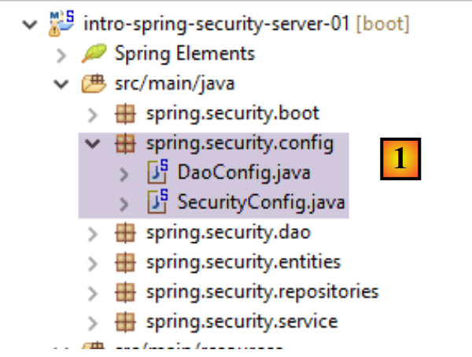 |
类 [DaoConfig] 配置了新项目引入的 [DAO] 层：
package spring.security.config;
import org.springframework.context.annotation.Bean;
import org.springframework.context.annotation.ComponentScan;
import org.springframework.context.annotation.Import;
import org.springframework.data.jpa.repository.config.EnableJpaRepositories;
@EnableJpaRepositories(basePackages = { "spring.security.repositories" })
@ComponentScan(basePackages = { "spring.security.dao" })
@Import({ spring.data.config.DaoConfig.class })
public class DaoConfig {
// 常量
final static private String[] ENTITIES_PACKAGES = { "spring.data.entities", "spring.security.entities" };
@Bean
public String[] packagesToScan() {
return ENTITIES_PACKAGES;
}
}
- 第 10 行：导入来自项目 [intro-spring-data-01] 的配置类 [spring.data.config.DaoConfig]，该类实现了产品和类别的 [DAO] 层；
- 第 8 行：指定当前项目中包含 [repositories] Spring Data 的文件夹；
- 第 9 行：指定当前项目中包含与 [DAO] 层相关的 Spring 组件的文件夹；
- 第14行：指定包含JPA实体的文件夹。 其中包括 [intro-spring-data-01] 项目和安全服务器项目的实体。第 16-19 行中的 Bean 处理了这些信息。该 Bean 重定义了 [intro-spring-data-01] 项目中同名的 Bean：
final static private String[] ENTITIES_PACKAGES = { "spring.data.entities" };
// EntityManagerFactory
@Bean
public EntityManagerFactory entityManagerFactory(JpaVendorAdapter jpaVendorAdapter, DataSource dataSource) {
LocalContainerEntityManagerFactoryBean factory = new LocalContainerEntityManagerFactoryBean();
factory.setJpaVendorAdapter(jpaVendorAdapter);
factory.setPackagesToScan(packagesToScan());
factory.setDataSource(dataSource);
factory.afterPropertiesSet();
return factory.getObject();
}
@Bean
public String[] packagesToScan() {
return ENTITIES_PACKAGES;
}
在 [DAO] 层中，第 8 行会扫描第 1 行指定的文件夹。由于安全项目中第 14-17 行对 Bean 进行了重定义（第 16-19 行），因此上述第 8 行现在将扫描 ["spring.data.entities", "spring.security.entities"] 文件夹。 需要注意的是，第10行导入的[spring.security.config.DaoConfig]类必须包含[@Configuration]注解，否则上述现象将无法生效。
类 [SecurityConfig] 用于配置项目的安全性。我们之前已经遇到过一个 Spring Security 的配置类：
package hello;
import org.springframework.context.annotation.Configuration;
import org.springframework.security.config.annotation.authentication.builders.AuthenticationManagerBuilder;
import org.springframework.security.config.annotation.web.builders.HttpSecurity;
import org.springframework.security.config.annotation.web.configuration.WebSecurityConfigurerAdapter;
import org.springframework.security.config.annotation.web.servlet.configuration.EnableWebMvcSecurity;
@Configuration
@EnableWebMvcSecurity
public class WebSecurityConfig extends WebSecurityConfigurerAdapter {
@Override
protected void configure(HttpSecurity http) throws Exception {
http.authorizeRequests().antMatchers("/", "/home").permitAll().anyRequest().authenticated();
http.formLogin().loginPage("/login").permitAll().and().logout().permitAll();
}
@Override
protected void configure(AuthenticationManagerBuilder auth) throws Exception {
auth.inMemoryAuthentication().withUser("user").password("password").roles("USER");
}
}
我们将采用相同的步骤：
- 第 11 行：定义一个继承自 [WebSecurityConfigurerAdapter] 类的类；
- 第 13 行：定义方法 [configure(HttpSecurity http)]，用于定义 Web 服务中各个 URL 的访问权限；
- 第 19 行：定义方法 [configure(AuthenticationManagerBuilder auth)]，用于定义用户及其角色；
[SecurityConfig] 类将如下所示：
package spring.security.config;
import org.springframework.beans.factory.annotation.Autowired;
import org.springframework.context.annotation.ComponentScan;
import org.springframework.context.annotation.Import;
import org.springframework.http.HttpMethod;
import org.springframework.security.config.annotation.authentication.builders.AuthenticationManagerBuilder;
import org.springframework.security.config.annotation.web.builders.HttpSecurity;
import org.springframework.security.config.annotation.web.configuration.EnableWebSecurity;
import org.springframework.security.config.annotation.web.configuration.WebSecurityConfigurerAdapter;
import org.springframework.security.config.http.SessionCreationPolicy;
import org.springframework.security.crypto.bcrypt.BCryptPasswordEncoder;
import spring.security.dao.AppUserDetailsService;
@EnableWebSecurity
@ComponentScan(basePackages = { "spring.security.service" })
@Import({ spring.webjson.config.AppConfig.class, DaoConfig.class })
public class SecurityConfig extends WebSecurityConfigurerAdapter {
@Autowired
private AppUserDetailsService appUserDetailsService;
// 安全
private boolean activateSecurity = true;
@Override
protected void configure(AuthenticationManagerBuilder registry) throws Exception {
// 身份验证由 Bean 完成 [appUserDetailsService]
// 密码由哈希算法加密 BCrypt
registry.userDetailsService(appUserDetailsService).passwordEncoder(new BCryptPasswordEncoder());
}
@Override
protected void configure(HttpSecurity http) throws Exception {
// CSRF
http.csrf().disable();
// 安全应用？
if (activateSecurity) {
// 密码通过 Authorization: Basic xxxx 头部传递
http.httpBasic();
// 必须为所有人授权 HTTP OPTIONS 方法
http.authorizeRequests() //
.antMatchers(HttpMethod.OPTIONS, "/", "/**").permitAll();
// 仅 ADMIN 角色可使用该应用程序
http.authorizeRequests() //
.antMatchers("/", "/**") // 所有 URL
.hasRole("ADMIN");
// 无会话
http.sessionManagement().sessionCreationPolicy(SessionCreationPolicy.STATELESS);
}
}
}
- 第 16 行：启用 Spring Security 组件；
- 第 17 行：添加 [spring.security.service] 包中的 Spring 组件；
- 第 18 行：导入前文所述的 [DAO] 层的 Bean，以及未受保护的 Web 服务器 / jSON 的 Bean；
- 第 21-22 行：注入 [AppUserDetails] 类，该类为应用程序用户提供访问权限；
- 第25行：一个布尔值，用于控制Web应用程序是否处于安全状态（true）或不安全状态（false）；
- 第27-32行：方法[configure(HttpSecurity http)]定义用户及其角色。该方法接收一个类型为[AuthenticationManagerBuilder]的参数。该参数包含两项信息（第38行）：
- 对第22行服务[appUserDetailsService]的引用，该服务提供对已注册用户的访问权限。需注意的是，此处并未显示用户是否存储在数据库中。因此，这些用户可能存储在缓存中，或由Web服务提供……
- 密码所使用的加密类型。在此重申，我们采用了BCrypt算法；
- 第34-52行：方法[configure(HttpSecurity http)]定义了Web服务中URL的访问权限；
- 第 37 行：我们在入门项目中看到，默认情况下 Spring Security 会管理一个 CSRF 令牌（跨站请求伪造），需要进行身份验证的用户必须将该令牌发回给服务器。 此处该机制已被禁用。结合布尔值（isSecured=false），这使得可以不使用安全机制来运行 Web 应用程序；
- 第 41 行：启用 HTTP 标头认证模式。客户端需发送以下 HTTP 标头：
其中 code 是字符串 login:password 通过 Base64 算法编码后的结果。例如，字符串 admin:admin 的 Base64 编码为 YWRtaW46YWRtaW4=。 因此，用户名 [admin] 和密码 [admin] 的用户将发送以下标头 HTTP 进行身份验证：
- 第46-48行：表示拥有角色[ROLE_ADMIN]的用户可以访问Web服务中的所有URL。这意味着没有该角色的用户无法访问该Web服务；
- 第50行：在[session]模式下，用户只需进行一次身份验证，后续访问便无需再次验证。此处禁用该模式，因此用户每次访问时都必须进行身份验证；
16.4.8. [DAO] 层测试
 |
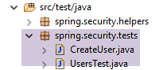 |
首先，我们创建一个可执行类 [CreateUser]，该类能够创建具有特定角色的用户：
package sprin.security.tests;
import org.springframework.context.annotation.AnnotationConfigApplicationContext;
import org.springframework.security.crypto.bcrypt.BCrypt;
import spring.security.config.DaoConfig;
import spring.security.entities.Role;
import spring.security.entities.User;
import spring.security.entities.UserRole;
import spring.security.repositories.RoleRepository;
import spring.security.repositories.UserRepository;
import spring.security.repositories.UserRoleRepository;
public class CreateUser {
public static void main(String[] args) {
// 语法：登录名 密码 roleName
// 需要三个参数
if (args.length != 3) {
System.out.println("Syntaxe : [pg] user password role");
System.exit(0);
}
// 获取参数
String login = args[0];
String password = args[1];
String roleName = String.format("ROLE_%s", args[2].toUpperCase());
// Spring 上下文
AnnotationConfigApplicationContext context = new AnnotationConfigApplicationContext(DaoConfig.class);
UserRepository userRepository = context.getBean(UserRepository.class);
RoleRepository roleRepository = context.getBean(RoleRepository.class);
UserRoleRepository userRoleRepository = context.getBean(UserRoleRepository.class);
// 该角色是否已存在？
Role role = roleRepository.findRoleByName(roleName);
// 如果不存在则创建
if (role == null) {
role = roleRepository.save(new Role(roleName));
}
// 用户是否已存在？
User user = userRepository.findUserByLogin(login);
// 如果不存在则创建
if (user == null) {
// 使用 bcrypt 对密码进行哈希处理
String crypt = BCrypt.hashpw(password, BCrypt.gensalt());
// 保存用户
user = userRepository.save(new User(login, login, crypt));
// 建立与角色的关联
userRoleRepository.save(new UserRole(user, role));
} else {
// 用户已存在——是否拥有请求的角色？
boolean trouvé = false;
for (Role r : userRepository.getRoles(user.getId())) {
if (r.getName().equals(roleName)) {
trouvé = true;
break;
}
}
// 若未找到，则创建与角色的关联
if (!trouvé) {
userRoleRepository.save(new UserRole(user, role));
}
}
// 关闭 Spring 上下文
context.close();
// 结束
System.out.println("Travail terminé...");
}
}
- 第 17 行：该类需要三个参数来定义用户：用户名、密码和角色；
- 第25-27行：获取这三个参数；
- 第 29 行：根据配置类 [AppConfig] 构建 Spring 上下文；
- 第30-32行：获取三个[Repository]的引用，这些引用可用于创建用户；
- 第34行：检查该角色是否已存在；
- 第36-38行：如果不存在，则在数据库中创建该角色。其名称将采用[ROLE_XX]的格式；
- 第 40 行：检查登录名是否已存在；
- 第 42-49 行：若用户名不存在，则在数据库中创建；
- 第 44 行：对密码进行加密。此处使用了 Spring Security 的 [BCrypt] 类（第 4 行）。因此需要该框架的依赖包。文件 [pom.xml] 包含以下依赖：
<dependency>
<groupId>org.springframework.boot</groupId>
<artifactId>spring-boot-starter-security</artifactId>
</dependency>
- 第 46 行：将用户信息写入数据库；
- 第 48 行：以及将其与角色关联的关系；
- 第 51-57 行：若登录用户已存在——则检查其现有角色中是否已包含要分配的角色；
- 第 59-61 行：若未找到目标角色，则在表 [USERS_ROLES] 中创建一条记录，将用户与其角色关联；
- 未对可能出现的异常进行防护。这是一个用于快速创建具有角色的用户的辅助类。
当使用参数 [x x guest] 执行该类时，数据库中将得到以下结果：
表 [USERS]
 |
表 [ROLES]
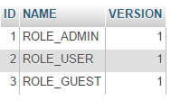 表 |
表 [USERS_ROLES]
 |
现在我们来看第二个类 [UsersTest]，它是一个测试类 JUnit：
package spring.security.tests;
import java.util.List;
import org.junit.Assert;
import org.junit.Test;
import org.junit.runner.RunWith;
import org.springframework.beans.factory.annotation.Autowired;
import org.springframework.boot.test.SpringApplicationConfiguration;
import org.springframework.security.core.authority.SimpleGrantedAuthority;
import org.springframework.security.crypto.bcrypt.BCrypt;
import org.springframework.test.context.junit4.SpringJUnit4ClassRunner;
import com.fasterxml.jackson.core.JsonProcessingException;
import com.fasterxml.jackson.databind.ObjectMapper;
import com.google.common.collect.Lists;
import spring.security.config.DaoConfig;
import spring.security.dao.AppUserDetails;
import spring.security.dao.AppUserDetailsService;
import spring.security.entities.Role;
import spring.security.entities.User;
import spring.security.repositories.UserRepository;
@SpringApplicationConfiguration(classes = DaoConfig.class)
@RunWith(SpringJUnit4ClassRunner.class)
public class UsersTest {
@Autowired
private UserRepository userRepository;
@Autowired
private AppUserDetailsService appUserDetailsService;
// 映射器 jSON
private ObjectMapper mapper = new ObjectMapper();
@Test
public void findAllUsersWithTheirRoles() throws JsonProcessingException {
Iterable<User> users = userRepository.findAll();
for (User user : users) {
System.out.println(String.format("\n----------Utilisateur [%s]",mapper.writeValueAsString(user)));
display("Roles :", userRepository.getRoles(user.getId()));
}
}
@Test
public void findUserByLogin() {
// 获取用户 [admin]
User user = userRepository.findUserByLogin("admin");
// 验证其密码为 [admin]
Assert.assertTrue(BCrypt.checkpw("admin", user.getPassword()));
// 验证管理员角色 / admin
List<Role> roles = Lists.newArrayList(userRepository.getRoles("admin", user.getPassword()));
Assert.assertEquals(1L, roles.size());
Assert.assertEquals("ROLE_ADMIN", roles.get(0).getName());
}
@Test
public void loadUserByUsername() {
// 获取用户 [admin]
AppUserDetails userDetails = (AppUserDetails) appUserDetailsService.loadUserByUsername("admin");
// 验证其密码为 [admin]
Assert.assertTrue(BCrypt.checkpw("admin", userDetails.getPassword()));
// 验证管理员 / 管理员角色
@SuppressWarnings("unchecked")
List<SimpleGrantedAuthority> authorities = (List<SimpleGrantedAuthority>) userDetails.getAuthorities();
Assert.assertEquals(1L, authorities.size());
Assert.assertEquals("ROLE_ADMIN", authorities.get(0).getAuthority());
}
// 实用方法——显示集合中的元素
private void display(String message, Iterable<?> elements) throws JsonProcessingException {
System.out.println(message);
for (Object element : elements) {
System.out.println(mapper.writeValueAsString(element));
}
}
}
- 第 37-44 行：视觉测试。显示所有用户及其角色；
- 第46-56行：通过使用[UserRepository]存储库，验证用户[admin]是否拥有密码[admin]及角色[ROLE_ADMIN]；
- 第 51 行：[admin] 是明文密码。 在数据库中，该密码是根据算法 BCrypt 加密的。方法 [BCrypt.checkpw] 可用于验证加密后的明文密码是否与数据库中的密码一致；
- 第58-69行：通过调用服务[appUserDetailsService]，验证用户[admin]的密码为[admin]，且角色为[ROLE_ADMIN]；
测试执行成功，日志如下：
16.4.9. Web 服务测试
我们将使用 Chrome 客户端 [Advanced Rest Client] 测试 Web 服务。我们需要指定身份验证标头 HTTP：
其中 [code] 是字符串 [login:password] 的 Base64 编码。要生成此代码，可以使用以下程序：
 |
package spring.security.helpers;
import org.springframework.security.crypto.codec.Base64;
public class Base64Encoder {
public static void main(String[] args) {
// 需要两个参数：登录名和密码
if (args.length != 2) {
System.out.println("Syntaxe : login password");
System.exit(0);
}
// 获取这两个参数
String chaîne = String.format("%s:%s", args[0], args[1]);
// 对字符串进行编码
byte[] data = Base64.encode(chaîne.getBytes());
// 显示其 Base64 编码
System.out.println(new String(data));
}
}
如果我们使用两个参数 [admin admin] 运行该程序：
 |
将得到以下结果：
现在我们已经知道如何生成 HTTP 身份验证头，于是我们启动安全 Web 服务，然后使用 Chrome 客户端 [Advanced Rest Client] 请求所有产品的列表：
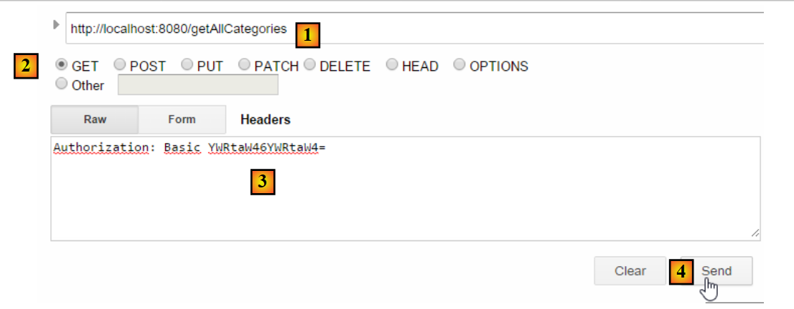 |
- 在 [1] 中，我们请求类别列表 URL；
- 在 [2] 中，使用 GET 方法；
- 在 [3] 中，我们提供身份验证的 HTTP 标头。代码 [YWRtaW46YWRtaW4=] 是字符串 [admin:admin] 的 Base64 编码；
- 在 [4] 中，我们发送命令 HTTP；
服务器的响应如下：
 |
- 在 [1] 中，包含认证头 HTTP；
- 在 [2] 中，服务器返回响应 jSON；
确实获得了分类列表：
 |
现在尝试发送一个带有错误认证头部的 HTTP 请求。响应如下：
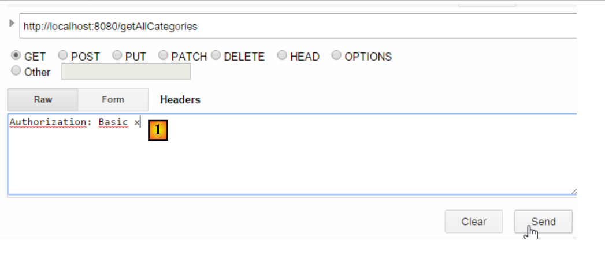 |
- 在 [1] 中：认证头 HTTP；
我们得到以下响应：
 |
- 转换为 [2]：Web 服务的响应；
现在，我们尝试用户 user / user。该用户存在，但无权访问 Web 服务。如果我们使用两个参数 [user user] 运行 Base64 编码程序：
 |
将得到以下结果：
 |
- 在 [1] 中：身份验证头 HTTP 错误；
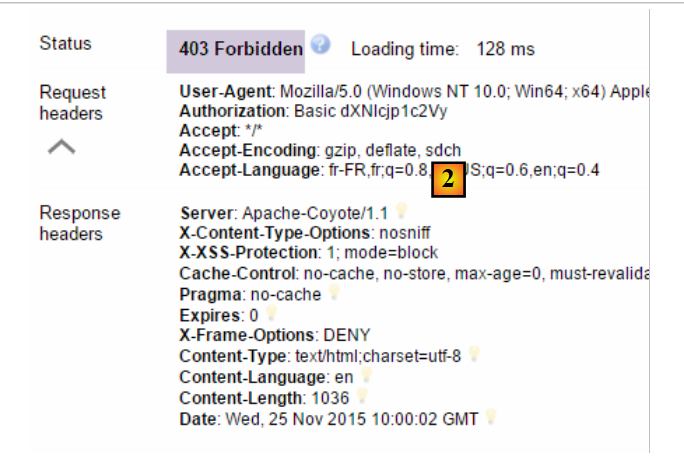 |
- 在 [2] 中：Web 服务的响应。它与之前的 [401 Unauthorized] 不同。这次，用户已成功认证，但没有足够的权限访问 URL；
我们的安全Web服务现已投入运行。
16.4.10. 一个 URL 身份验证
 |
我们将创建一个 URL，用于判断用户是否被授权访问 Web 服务。为此，我们创建了以下新的控制器 MVC [AuthenticateController]：
package spring.security.service;
import org.springframework.beans.factory.annotation.Autowired;
import org.springframework.context.ApplicationContext;
import org.springframework.stereotype.Controller;
import org.springframework.web.bind.annotation.RequestMapping;
import org.springframework.web.bind.annotation.RequestMethod;
import org.springframework.web.bind.annotation.ResponseBody;
import com.fasterxml.jackson.core.JsonProcessingException;
import com.fasterxml.jackson.databind.ObjectMapper;
import spring.webjson.models.Response;
@Controller
public class AuthenticateController {
// Spring 依赖项
@Autowired
private ApplicationContext context;
@RequestMapping(value = "/authenticate", method = RequestMethod.GET, produces = "application/json; charset=UTF-8")
@ResponseBody
public String authenticate() throws JsonProcessingException {
// 响应 jSON
ObjectMapper mapperResponse = context.getBean(ObjectMapper.class);
return mapperResponse.writeValueAsString(new Response<Void>(0, null, null));
}
}
- 第 15 行：类 [AuthenticateController] 是一个 Spring 控制器。因此，它暴露了 URL；
- 第 22 行：暴露 URL 和 [/authenticate]；
- 第 23 行：该方法的结果将直接发送给客户端；
- 第26-27行：该方法仅返回一个空的[Response]对象，但其中[status]的值为0，表明未发生错误；
这个 URL 有什么用？当我们仅需验证用户身份时，会请求该参数。我们已看到，若安全层不接受该用户，则会抛出异常。以下是一个示例；
使用用户 [admin:admin]：
 | 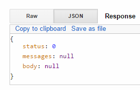 |
返回的是空响应，但没有抛出异常。
使用用户 [user:user]：
 |  |
发生了异常。
16.4.11. 结论
在无需修改原始 Web/JSON 项目的情况下，成功为 Spring Security 添加了必要的类。这种非常理想的情况源于新增的三个数据库表与现有表相互独立。 甚至可以将它们放在一个独立的数据库中。在其他情况下，新增的表可能与现有表存在关联。此时需要修改 JPA 实体，这通常会影响项目的所有层。
16.5. 为安全 Web 服务 / jSON 编写的客户端
我们已经为非安全 Web 服务 / jSON 编写了一个客户端：
 |
现在我们将为安全 Web 服务编写一个客户端：
 |
我们将已编写的项目 [intro-webjson-client] 复制到新项目 [intro-spring-security-client-01] 中：
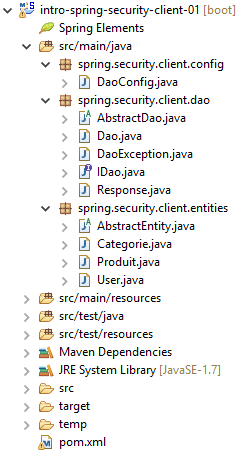 |
16.5.1. 类 [AbstractDao]
类 [AbstractDao] 负责与安全 Web 服务器 / jSON 进行通信。 正如我们刚才所见，在此通信中，客户端现在必须发送一个身份验证头，例如：
具体操作如下：
package spring.security.client.dao;
import java.net.URI;
...
public abstract class AbstractDao {
// 数据
@Autowired
protected RestTemplate restTemplate;
@Autowired
protected String urlServiceWebJson;
// 通用请求
protected String getResponse(User user, String url, String jsonPost) {
// 联系网址：URL
- 第 15 行：负责与安全 Web 服务进行 HTTP 通信的通用方法 [getResponse]，现在允许将请求 URL 的用户作为第一个参数。 [User] 类如下：
该类定义如下：
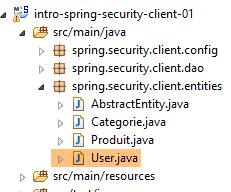 |
package spring.security.client.entities;
public class User {
// 属性
private String login;
private String password;
// 构造函数
public User() {
}
public User(String login, String password) {
this.login = login;
this.password = password;
}
// 获取器和设置器
...
}
因此，[getResponse]方法变为如下形式：
package spring.security.client.dao;
import java.net.URI;
import java.net.URISyntaxException;
import java.util.Base64;
import org.springframework.beans.factory.annotation.Autowired;
import org.springframework.core.ParameterizedTypeReference;
import org.springframework.http.MediaType;
import org.springframework.http.RequestEntity;
import org.springframework.http.RequestEntity.BodyBuilder;
import org.springframework.http.RequestEntity.HeadersBuilder;
import org.springframework.web.client.RestTemplate;
import spring.security.client.entities.User;
public abstract class AbstractDao {
// 数据
@Autowired
protected RestTemplate restTemplate;
@Autowired
protected String urlServiceWebJson;
private String getBase64(User user) {
// 将用户名和密码进行Base64编码 - 需要Java 8
String chaîne = String.format("%s:%s", user.getLogin(), user.getPassword());
return String.format("Basic %s", new String(Base64.getEncoder().encode(chaîne.getBytes())));
}
// 通用请求
protected String getResponse(User user, String url, String jsonPost) {
// 网址：URL 请联系
// jsonPost：需提交的值 jSON
try {
// 执行请求
RequestEntity<?> request;
if (jsonPost == null) {
HeadersBuilder<?> headersBuilder = RequestEntity.get(new URI(String.format("%s%s", urlServiceWebJson, url)))
.accept(MediaType.APPLICATION_JSON);
if (user != null) {
headersBuilder = headersBuilder.header("Authorization", getBase64(user));
}
request = headersBuilder.build();
} else {
BodyBuilder bodyBuilder = RequestEntity.post(new URI(String.format("%s%s", urlServiceWebJson, url)))
.header("Content-Type", "application/json").accept(MediaType.APPLICATION_JSON);
if (user != null) {
bodyBuilder = bodyBuilder.header("Authorization", getBase64(user));
}
request = bodyBuilder.body(jsonPost);
}
// 正在执行请求
return restTemplate.exchange(request, new ParameterizedTypeReference<String>() {
}).getBody();
} catch (URISyntaxException e1) {
throw new DaoException(20, e1);
} catch (RuntimeException e2) {
throw new DaoException(21, e2);
}
}
}
- 第 42-44 行、第 49-51 行：如果用户 [user] 不为空，则添加身份验证头。 用户及其密码的 Base64 编码由第 25-29 行中的 [getBase64] 方法负责。 需注意的是，该方法使用了属于 JDK 1.8 的 [Base64] 类。
- 除上述行外，其余代码保持不变；
16.5.2. [IDao] 接口
接口 [IDao] 中的所有方法都会接收一个额外的参数 [User user]：
 |
package spring.security.client.dao;
import java.util.List;
import spring.security.client.entities.Categorie;
import spring.security.client.entities.Produit;
import spring.security.client.entities.User;
public interface IDaoClient {
// 身份验证
public void authenticate(User user);
// 插入产品列表
public List<Produit> addProduits(User user, List<Produit> produits);
// 删除所有产品
public void deleteAllProduits(User user);
// 更新产品列表
public List<Produit> updateProduits(User user, List<Produit> produits);
// 获取所有产品
public List<Produit> getAllProduits(User user);
// 插入分类列表
public List<Categorie> addCategories(User user, List<Categorie> categories);
// 删除所有分类
public void deleteAllCategories(User user);
// 更新分类列表
public List<Categorie> updateCategories(User user, List<Categorie> categories);
// 获取所有分类
public List<Categorie> getAllCategories(User user);
// 特定产品
public Produit getProduitByIdWithCategorie(User user, Long idProduit);
public Produit getProduitByIdWithoutCategorie(User user, Long idProduit);
public Produit getProduitByNameWithCategorie(User user, String nom);
public Produit getProduitByNameWithoutCategorie(User user, String nom);
// 特定类别
public Categorie getCategorieByIdWithProduits(User user, Long idCategorie);
public Categorie getCategorieByIdWithoutProduits(User user, Long idCategorie);
public Categorie getCategorieByNameWithProduits(User user, String nom);
public Categorie getCategorieByNameWithoutProduits(User user, String nom);
}
- 第 12 行：我们添加了 [authenticate(User user)] 方法用于用户身份验证。如果用户无权访问 Web 服务的 URL [/authenticate]，该方法将抛出异常；
16.5.3. [Dao] 类
[Dao] 类的所有方法都会接收一个额外的参数 [User user]，并将该参数传递给 [AbstractDao] 类的泛型方法 [getResponse]。以下是两个示例：
// 身份验证
@Override
public void authenticate(User user) {
getResponse(user, "/authenticate", null);
}
@Override
public List<Produit> addProduits(User user, List<Produit> produits) {
// ----------- 添加产品（不包含其类别）
try {
// 映射器 jSON
ObjectMapper mapperPost = context.getBean(ObjectMapper.class);
mapperPost.setFilters(jsonFilterProduitWithoutCategorie);
ObjectMapper mapperResponse = mapperPost;
// 请求
Response<List<Produit>> response = mapperResponse.readValue(
getResponse(user, "/addProduits", mapperPost.writeValueAsString(produits)),
new TypeReference<Response<List<Produit>>>() {
});
// 错误？
if (response.getStatus() != 0) {
// 抛出 1 个异常
throw new DaoException(response.getStatus(), response.getMessages());
} else {
// 返回服务器响应主体
return response.getBody();
}
} catch (DaoException e1) {
throw e1;
} catch (IOException | RuntimeException e2) {
throw new DaoException(100, e2);
}
}
16.5.4. [Dao] 类的单元测试
[Dao] 类的单元测试类 [Test01] 已按以下方式修改：
 |
package client.tests.junit;
...
@SpringApplicationConfiguration(classes = DaoConfig.class)
@RunWith(SpringJUnit4ClassRunner.class)
public class Test01 {
// Spring 上下文
@Autowired
private ApplicationContext context;
// [DAO] 层
@Autowired
private IDaoClient dao;
// 用户
static private User admin;
static private User user;
static private User unknown;
@BeforeClass
public static void init() {
admin = new User("admin", "admin");
user = new User("user", "user");
unknown = new User("x", "y");
}
@Before
public void cleanAndFill() {
// 每次测试前清理数据库
log("Vidage de la base de données", 1);
// 清空表 [CATEGORIES] - 由此引发级联，表 [PRODUITS] 将被清空
dao.deleteAllCategories(admin);
// --------------------------------------------------------------------------------------
log("Remplissage de la base", 1);
// 填充表
List<Categorie> categories = new ArrayList<Categorie>();
for (int i = 0; i < 2; i++) {
Categorie categorie = new Categorie(String.format("categorie%d", i));
for (int j = 0; j < 5; j++) {
categorie.addProduit(new Produit(String.format("produit%d%d", i, j), 100 * (1 + (double) (i * 10 + j) / 100),
String.format("desc%d%d", i, j)));
}
categories.add(categorie);
}
// 添加分类 - 通过级联，产品也将被插入
dao.addCategories(admin, categories);
}
@Test
public void showDataBase() throws BeansException, JsonProcessingException {
// 类别列表
log("Liste des catégories", 2);
List<Categorie> categories = dao.getAllCategories(admin);
affiche(categories, context.getBean("jsonMapperCategorieWithoutProduits", ObjectMapper.class));
// 产品列表
log("Liste des produits", 2);
List<Produit> produits = dao.getAllProduits(admin);
affiche(produits, context.getBean("jsonMapperProduitWithoutCategorie", ObjectMapper.class));
// 进行一些验证
Assert.assertEquals(2, categories.size());
Assert.assertEquals(10, produits.size());
Categorie categorie = findCategorieByName("categorie0", categories);
Assert.assertNotNull(categorie);
Produit produit = findProduitByName("produit03", produits);
Assert.assertNotNull(produit);
Long idCategorie = produit.getIdCategorie();
Assert.assertEquals(categorie.getId(), idCategorie);
}
...
@Test()
public void checkUserUser() {
ServiceException se = null;
try {
dao.authenticate(user);
} catch (ServiceException e) {
se = e;
}
Assert.assertNotNull(se);
Assert.assertEquals("403 Forbidden", se.getMessages().get(0));
}
@Test()
public void checkUserUnknown() {
ServiceException se = null;
try {
dao.authenticate(unknown);
} catch (ServiceException e) {
se = e;
}
Assert.assertNotNull(se);
Assert.assertEquals("401 Unauthorized", se.getMessages().get(0));
}
@Test()
public void checkUserAdmin() {
ServiceException se = null;
try {
dao.authenticate(admin);
} catch (ServiceException e) {
se = e;
}
Assert.assertNull(se);
}
...
}
- 在测试类初始化时（第21-26行），创建了三个用户：
- 用户 [admin] 可以访问 Web 服务中的 URL，测试第 96-104 行；
- 用户 [user] 存在，但无权使用 Web 服务的 URL，请测试第 71-81 行；
- 用户 [unknown] 不存在，测试第 83-93 行；
- 测试方法与之前针对非安全Web服务所用的方法相同，唯一区别在于调用[IDaoClient]接口的方法时，将拥有使用URL权限的用户[admin]作为第一个参数；
测试虽然通过了，但可以看出其速度比未加密的Web服务要慢。应用程序的加密会显著增加其响应时间。在加密Web服务的性能方面，有一个重要因素值得注意：在配置该服务的[AppConfig]类中，我们写道：
@Override
protected void configure(HttpSecurity http) throws Exception {
// CSRF
http.csrf().disable();
// 应用程序安全吗？
if (activateSecurity) {
// 密码通过 Authorization: Basic xxxx 头传递
http.httpBasic();
// 必须为所有人授权 HTTP OPTIONS 方法
http.authorizeRequests() //
.antMatchers(HttpMethod.OPTIONS, "/", "/**").permitAll();
// 仅 ADMIN 角色可使用该应用程序
http.authorizeRequests() //
.antMatchers("/", "/**") // 所有 URL
.hasRole("ADMIN");
// 无会话
http.sessionManagement().sessionCreationPolicy(SessionCreationPolicy.STATELESS);
}
}
第17行代码会产生额外开销。它强制用户在每次访问时都进行身份验证。如果将其注释掉，前一个测试JUnit的耗时将从10.57秒缩短至4.21秒， 这是因为用户 [admin] 仅在首次测试时进行身份验证，后续测试则无需验证（即使客户端发送了身份验证头 HTTP，服务器也不会重新验证用户的密码）。 对于不安全的Web服务，JUnit测试的耗时降至2.33秒。